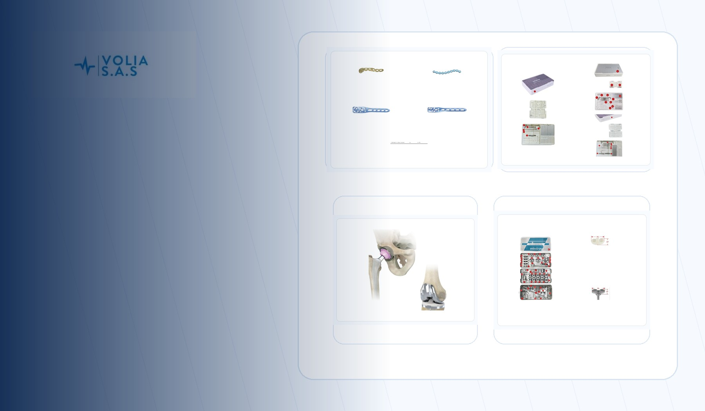
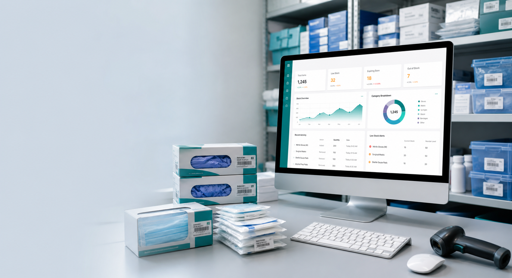

Agencia de productos y sistemas digitales
Diseñamos activos digitales que venden, automatizan y elevan la operacion.
Somos una unidad de estrategia, diseño, programacion e IA para marcas, profesionales y negocios que necesitan algo mas fuerte que una pagina bonita: productos digitales, captacion, dashboards, automatizaciones y experiencias listas para operar.
Web platforms
AI systems
Automation
Dashboards
Digital products
Posicionamiento
La oferta no es “hacer paginas”. Es construir infraestructura comercial ligera.
Un activo digital serio debe explicar, persuadir, capturar informacion, filtrar oportunidades, ordenar operaciones y producir datos. Por eso trabajamos la pagina, el contenido, el sistema y la automatizacion como una sola arquitectura.
Growth
Operations
Education
Healthcare
Creators
Soluciones
Productos digitales para distintos nichos, conectados por una misma logica: claridad, conversion y operacion.
La agencia puede entrar por una necesidad pequeña y crecer hacia un sistema completo. Esto permite vender en varios mercados sin perder posicion premium.
Captacion y venta
Landing pages, paginas de servicio, funnels simples, formularios de filtro, lead magnets y rutas hacia WhatsApp, agenda o correo.
Micro-apps y prototipos
Herramientas pequeñas para validar ideas, vender una experiencia, simular un producto o crear una demo funcional.
IA y automatizacion
Prompts operativos, flujos de contenido, clasificacion de solicitudes, respuestas base, reportes y procesos asistidos.
Paneles de control
Dashboards para ventas, productividad, inventario, clientes, estudiantes, habitos, seguimiento clinico no diagnostico o gestion interna.
Educacion digital
Paginas de cursos, evaluaciones, quizzes, bibliotecas, recursos descargables, rutas de aprendizaje y portales psicoeducativos.
Presencia corporativa
Webs bilingues, media kits, catalogos digitales, paginas institucionales, arquitectura de contenido e identidad verbal.
Capacidades
Un equipo pequeño con una cadena de produccion amplia.
La ventaja no es prometer todo. Es orquestar bien estrategia, IA, diseño, codigo y contenido para entregar activos que una persona o negocio pueda usar desde el primer dia.
Industrias
Una agencia para varios nichos, sin volverse generica.
Salud, psicologia y bienestar
Web profesional, filtros de pacientes, tests psicoeducativos, recursos, agenda y contenidos de confianza.
Educacion y formacion
Landing de cursos, evaluaciones, dashboards de avance, bibliotecas y paginas bilingues.
Consultoria y coaching
Diagnosticos iniciales, embudos, formularios de calificacion, propuestas y sistemas de seguimiento.
Comercio y catalogos
Catalogos digitales, fichas de producto, formularios de pedido, QR, inventarios y paginas de venta.
Creadores y marcas personales
Media kits, micrositios, paginas de servicios, lead magnets y sistemas de contenido con IA.
Startups y proyectos nuevos
MVPs visuales, prototipos en Figma, demos funcionales y validacion rapida de producto.
Casos y pruebas
Produccion real que demuestra amplitud: marca, web, catalogo, dashboard y experiencia.
Estos proyectos son la base visible. La siguiente etapa es convertir cada caso en una historia comercial con problema, solucion, entregables y resultado.
Portfolio vivo
Se puede ampliar por nicho, industria, tipo de producto y nivel de complejidad.

Experiencia web
Inner Oraculum
Sitio experiencial con servicios, identidad visual, contenido y estructura de conversion.

Catalogo comercial
Volia
Pagina de producto medico con presentacion institucional, catalogos y contacto directo.

Dashboard operativo
MedStock
Interfaz para inventario, control visual, orden de productos y gestion interna.
Marca de servicios
Scriptorium
Arquitectura de oferta, portafolio documental, servicios especializados y presencia multilingue.
Modelos de trabajo
Formas claras de contratar sin limitar el crecimiento del proyecto.
La entrada puede ser puntual, pero la relacion puede escalar hacia una red completa de activos digitales.
Launch Sprint
Para lanzar una pagina, landing, catalogo o prototipo con alcance cerrado.
- Brief y arquitectura
- Diseño responsive
- Copy base y CTA
- Entrega lista para publicar
Growth System
Para construir presencia, captacion, formulario inteligente y seguimiento.
- Web o landing premium
- Oferta y contenido
- Formulario/cotizador/test
- Dashboard inicial
Automation Partner
Para negocios que quieren ahorrar tiempo y ordenar procesos con IA.
- Mapa del proceso
- Prompts y plantillas
- Flujos de contenido o atencion
- Documentacion de uso
Metodo
Un proceso ejecutivo para pasar de idea a activo operativo.
Diagnostico
Objetivo, nicho, publico, oferta, procesos actuales y entregable prioritario.
Arquitectura
Mapa de pantallas, secciones, datos, CTA, automatizaciones y contenido necesario.
Produccion
Diseño, codigo, copy, IA, dashboard, formularios y pruebas funcionales.
Entrega
Revision mobile, archivos listos, guia de uso y siguiente roadmap de mejora.
Solicitud ejecutiva
Cuéntanos que producto, sistema o activo digital quieres construir.
Recibiras una propuesta con alcance, entregables, prioridad, tiempos y el mejor punto de entrada. Si la idea esta cruda, empezamos por convertirla en una arquitectura vendible.
Diagnostico
Roadmap
Entrega modular
Escala con IA